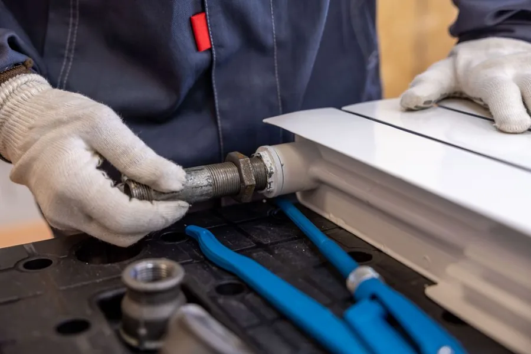
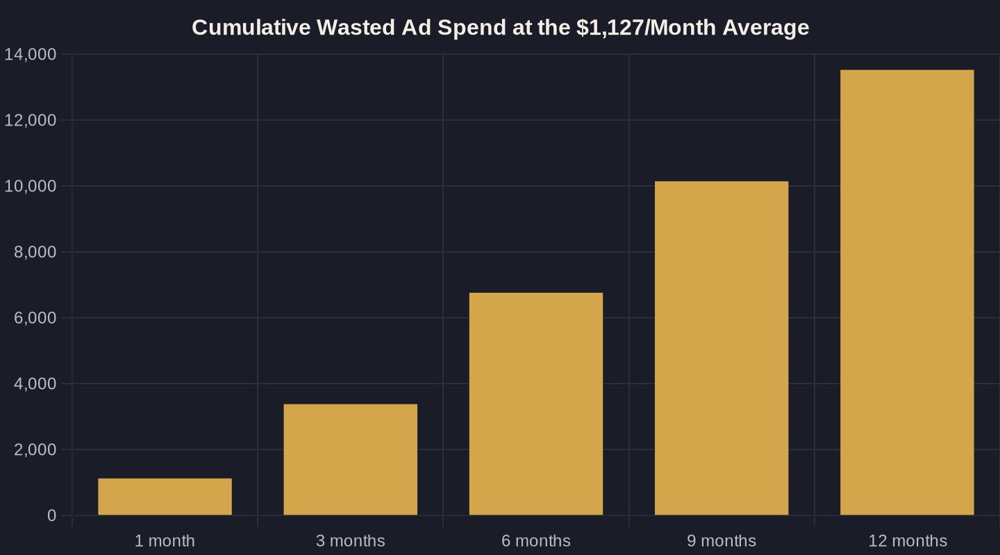

Where Local Service Businesses Leak the Most Marketing Money
Most marketing waste isn't dramatic. It's small, quiet, and easy to miss until you trace the math. Here are the five places local service budgets leak — and how to spot each one in your own account.
Key takeaways
- The average account wastes about $1,127 a month on Google Ads — roughly $3,383 a quarter that books no work.
- One in four accounts has zero negative keywords; adding them lifts conversion rates from 4.6% to 13%, about a 3x gain.
- Phone calls convert to revenue 10 to 15 times more often than web leads, yet often go untracked — your best leads look invisible.
- Optimizing to cost-per-lead buys cheap, low-quality leads; cost per booked job is the only honest number.
- Most leaks are visibility problems, not budget problems — Owner's Math traces one dollar from impression to revenue.
The True Size of Wasted Ad Spend
Most local service owners assume their ad budget is mostly working. The data says otherwise. An analysis of more than 250,000 reports across 15,666 accounts found that the average business burns through roughly $1,127 a month in wasted ad spend — about $3,383 every quarter that produces no booked work.
For a plumber, HVAC company, or med spa running a modest $3,000 to $5,000 monthly budget, that is a meaningful slice walking out the door every month. The frustrating part is that the leaks are rarely dramatic. They are small, quiet, and easy to miss until you sit down and trace the math one dollar at a time.
That tracing is the whole point. It is the difference between hoping your marketing works and knowing what it returns — the core discipline behind marketing ROI for local business. Below are the five places that money most often leaks, in the order they usually cost owners the most.
Leak #1: Paying for Searches You Never Wanted
The fastest source of wasted ad spend is paying for clicks from people who were never going to buy. Someone searching "free plumbing advice," "plumber salary," or "how to fix a faucet myself" can trigger your ad, take your click, and charge your account — all without a shred of intent to hire anyone.
The fix is negative keywords, and most accounts neglect them. The same study found that 25% of businesses have not added a single negative keyword, while accounts that use them average a 13% conversion rate versus 4.6% for accounts with none — roughly a 3x difference.
Pull your search terms report and read the actual queries you paid for last month. If you see job seekers, DIYers, and competitors mixed in with real buyers, you have found a leak. Closing it is often the single highest-return hour you can spend in an account.

Leak #2: The Phone Calls Nobody Counts
For local service businesses, the phone is still where deals close — and it is exactly where reporting quietly falls apart. 70% of mobile searchers call a business directly from the results, and in local search specifically, about 28% of voice searchers go on to call. If those calls aren't tracked, your ad platform reports zero conversions for traffic that is actually ringing your phone off the hook.
The value gap makes this worse. Phone calls convert to revenue 10 to 15 times more often than web leads, and calls are projected to influence over $1 trillion in US consumer spending this year. When you cannot see your best leads, you end up optimizing against them — cutting the very campaigns driving the phone.
This blind spot is the heart of the attribution gap, and it makes genuinely good campaigns look like wasted ad spend. Without call tracking tied back to the keyword and campaign, you are flying half-blind on the channel that matters most.
Leak #3: Slow Follow-Up Turns Paid Leads Into Lost Ones
You can run a clean account, track every call, and still leak money after the lead arrives. A lead you paid for that sits unanswered for three hours is, financially, the same as wasted ad spend — you bought it and then let it expire on the vine.
Speed is the deciding factor in who wins the job. The first business to respond usually books it, and minutes matter far more than most owners expect. The lead does not wait for you; while your form submission sits in an inbox, that homeowner is already on the phone with the next company in the search results.
We break down the economics of response time in speed-to-lead, but the headline is simple: a five-minute callback beats a five-hour one almost every time. If no one owns the job of answering fast, your ad budget is funding leads your competitors close.
| Leak | Typical Cause | How to Spot It in Your Account |
|---|---|---|
| Irrelevant clicks | No negative keywords | Search terms report full of off-topic or DIY queries |
| Untracked phone calls | No call tracking | Phone rings, but ad reports show few or zero conversions |
| Slow follow-up | No speed-to-lead system | Leads contacted hours or days after they came in |
| Vanity metrics | Counting leads, not booked jobs | Cost per lead looks fine, but revenue stays flat |
| Wrong audience or geography | Broad, unmanaged targeting | Spend showing up in zip codes you do not serve |

Leak #4: Counting Leads Instead of Booked Jobs
The most expensive leak is measuring the wrong thing. Cost per lead can look perfectly healthy while revenue stays flat, because "leads" quietly lump together booked jobs, tire-kickers, wrong numbers, and outright spam. Optimize toward cheap leads and you often buy more of the worst ones — a subtle but very real form of wasted ad spend.
The honest number is cost per booked job — what you actually pay to put real, revenue-producing work on the calendar. It is the only metric that ties a dollar of spend to a dollar of income, and it is the one most agencies avoid because it is unforgiving.
Connect ad spend to booked jobs and the picture often flips overnight. Campaigns that looked cheap turn out to be expensive once you count real work, and the "expensive" campaigns frequently turn out to be your best buyers. You cannot fix what you refuse to measure.
Plugging the Leaks With Owner's Math
None of these leaks require a bigger budget to fix. They require visibility — the ability to trace one dollar from impression to lead to booked job to revenue, and to see exactly where the chain breaks. That single trace is what Owner's Math gives you, and it turns "I think marketing is working" into a number you can actually defend.
The good news is that most of this is now automatable. The tracking, call attribution, fast follow-up, and booked-job reporting that used to demand a full team can be built once and run quietly in the background — see AI for local business for how that stack fits together for an owner who does not want to babysit it.
If you cannot cleanly answer what a dollar of marketing returns in your business, that is the place to start. Tell me your monthly ad spend and what you sell, and I will walk you through where the math says your money is most likely leaking — and what plugging it is realistically worth. That is the conversation worth having before you spend another dollar.
Sources
Want this run on your numbers?
Book a call and we will run the Owner's Math on your business — clear numbers, a straight plan, no pitch. Or read the free Playbook first.